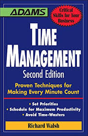

Understanding the role a developer plays is important in that it helps have clear boundaries and avoids conflicts with colleagues. This book explains some of the approaches used by organisations to design, build and maintain software.
Design thinking is a technique
One of the most valuable skills anyone can learn is time management. This book goes into detail in ways anyone can apply to become a better time manager. As a developer, having a task list is essential to measurement of progress and even having a visual representation of your path.

This book...

Learning UI/UX design is not about becoming a designer; it is about
becoming a more well-rounded full-stack developer. By understanding user
needs and prioritizing a positive user experience, UI/UX design guides me
in building applications that are not only functional but also a joy to
use. Here's how:
Empathy for the User: UI/UX design taught me to see the world
through the user's eyes. I learned to identify user needs, pain points,
and motivations. This newfound empathy translates into code that
prioritizes a seamless user journey, ultimately leading to a more
successful product.
Building for Efficiency: Effective UI/UX design ensures a clear
information hierarchy and intuitive layouts. As a developer with this
knowledge, I can create code that reflects these principles. This results
in applications that are not only functional but also efficient,
minimizing user frustration and maximizing engagement.
Prioritizing the Visual Experience: A well-designed interface is
not just about aesthetics; it's about guiding the user. By understanding
UI design principles like color theory, typography, and visual hierarchy,
I am able to write code that contributes to a polished and user-friendly
experience.
Communication and Collaboration: UI/UX design fosters a
collaborative approach. Having this knowledge allows me to better
communicate with designers, translating their vision into a functional
reality. This improved communication leads to a more streamlined
development process and a higher quality final product.
A T-Shaped Skillset: The ideal full-stack developer boasts a
T-shaped skillset – deep technical expertise in one area (like back-end
development) combined with a broad understanding of other relevant fields.
UI/UX design perfectly complements a full-stack developer's skillset,
making them a more valuable asset in any team.
In conclusion, This, in turn, opens doors to exciting career opportunities
and positions you at the forefront of web and application development.